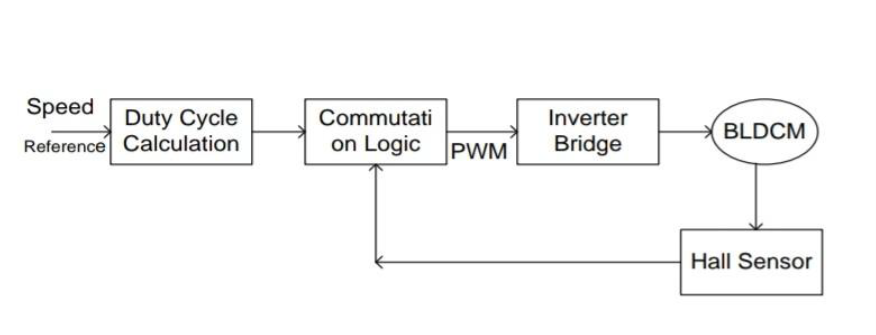

Smart Home Automation using ARM Cortex M4-based STM32 and IoT
Introduction
IIn this era of IoT advancement, we present an integrated home automation solution leveraging the ARM Cortex-M4 architecture implemented on an STM32F303 Discovery board. Our system architecture incorporates multiple sensor nodes (KY-026 flame sensor, KY-018 photoresistor, DHT11 temperature/humidity sensor) and actuator modules controlled by L293D drivers, creating a comprehensive environmental monitoring and control framework. The system's core functionality is enhanced through cloud connectivity via an ESP32 Wi-Fi module, enabling remote management of household systems through AWS IoT and ThingSpeak platforms.
Project Overview
Key Components:
STM32 Microcontroller:
-
DModel :STM32F303 Discovery board featuring the ARM Cortex-M4 core.
-
Function :Acts as the central processing unit, handling data from various sensors and controlling actuators.
-
Programming Environment :STM32CubeIDE for firmware development, utilizing the ARM Cortex-M4 architecture for high performance and efficiency.
Sensors:
-
Flame Sensor KY-026 :Detects fire hazards and activates safety protocols.
-
Photoresistor KY-018 :Adjusts lighting based on ambient light conditions.
-
DHT11 :Monitors temperature and humidity, contributing to climate control.
Actuators:
-
Motor Driver (L293D) :Controls motors for various home automation tasks, such as operating fans and water pumps.
-
16x2 LCD Display :Provides real-time data display for easy monitoring and user interaction.
Connectivity:
-
ESP32 Wi-Fi Module :Enables the system to function as an IoT node, facilitating real-time data monitoring and control via cloud platforms like AWS IoT and ThingSpeak.
Features:
-
User-Friendly Interface :The system includes a 16x2 I2C display and STM32CubeIDE's "Live Expression" feature for on-site monitoring.
-
Real-Time Monitoring :Allows users to track home conditions and control devices remotely.
-
Cloud Integration :Data is sent to AWS IoT and ThingSpeak for analysis and remote control, enhancing the system's functionality and accessibility.
System Context
-
Users :Homeowners can monitor and control home devices via a mobile app or web interface.
-
Integration :The system uses various sensors for environmental monitoring and connects to cloud platforms for data analysis and remote control.

Benefits
-
Enhanced Efficiency :Automates routine tasks, improving energy efficiency and convenience.
-
Safety :Provides real-time alerts for fire hazards and other environmental issues.
-
Scalability :Can be expanded to include additional sensors and actuators for more comprehensive home automation.